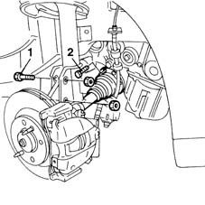
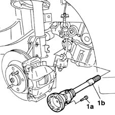
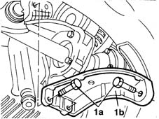
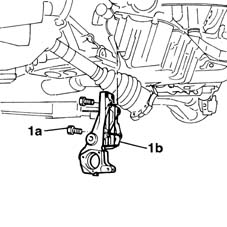

2710A35 intermediate drive shaft mount - r r
- Path
- Procedures > 27 AXLE > 2710 FRONT AXLE > 2710A drive shafts and joints > 2710A35 intermediate drive shaft mount - r r
- Kind
- repair procedure (removal / refitting; the operation number is the code)
- Applies to
- engines: 1.9 JTD 8V; all production periods
- Interactive page
- https://sloeber94.github.io/elrnDB-fMltpl/en/#/2891566
Applies to: engines: 1.9 JTD 8V; all production periods
 Removing
Removing
 Refitting
Refitting1048A10 AIR CLEANER FILTERING ELEMENT - REPLACE
1016A10 sound-proofing cover - r + r
1080D34 engine oil vapour separator - r + r
4450B10 Front WHEEL (one) - R.R.
7055B42 Additional FRONT WHEEL ARCH (one), left or right - R.R.
1092G10 single engine belt r r
5530A14 alternator - r+r for versions with air conditioner
1. Undo the bolts securing the vertical link to the suspension.
2. Undo the bolts securing the drive shaft to the intermediate shaft and move the drive shaft aside.

Applies to: engines: 1.9 JTD 8V; all production periods
1. Undo the bolts (1a) and remove the intermediate shaft (1b).

Applies to: engines: 1.9 JTD 8V; all production periods
1. Undo the two bolts (1a) and remove the alternator mounting bracket (1b).

Applies to: engines: 1.9 JTD 8V; all production periods
1. Undo the bolts (1a) and remove the intermediate shaft mounting (1b).

Applies to: engines: 1.9 JTD 8V; all production periods
Refitting
RemovingPosition the shaft mounting in its seating.
Tighten the bolts securing the intermediate shaft mounting.
 | Fastening | Component | Ø | Value (daNm) |
|---|---|---|---|---|
- | Bolt | FRONT DRIVE SHAFT BEARING MOUNT | M10 | 7 |
Fit the alternator mounting bracket and tighten the two fixing bolts.
| Fastening | Component | Ø | Value (daNm) |
|---|---|---|---|---|
- | Bolt | FRONT ALTERNATOR SUPPORT | M8 | 2.5 |
Fit the intermediate shaft and tighten the fixing bolts.
Tighten the bolts securing the shaft to the differential flange to the specified torque.
| Fastening | Component | Ø | Value (daNm) |
|---|---|---|---|---|
- | Bolt | FRONT DRIVE SHAFT COMPLETE WITH JOINTS | M8 | 3 |
Tighten the bolts securing the suspension vertical link to the shock absorber to the specified torque.
| Fastening | Component | Ø | Value (daNm) |
|---|---|---|---|---|
- | Nut | FRONT HUB STEERING KNUCKLE. | M10 | 7 |
5530A14 alternator - r+r for versions with air conditioner
1092G10 single engine belt r r
- 7055B64 Engine compartment DUST shield in front wheel arch (one), left or right - R.R.
4450B10 Front WHEEL (one) - R.R.
1080D34 engine oil vapour separator - r + r
Topics linked from this page (8)
- 1016A10 sound-proofing cover - r + r
- 1048A10 AIR CLEANER FILTERING ELEMENT - REPLACE
- 1080D34 engine oil vapour separator - r + r
- 1092G10 single engine belt r r
- 4450B10 Front WHEEL (one) - R.R.
- 5530A14 alternator - r+r for versions with air conditioner
- 5530B10 battery - r+r
- 7055B42 Additional FRONT WHEEL ARCH (one), left or right - R.R.